0. 前言
与祁老师一同参加2020年软件杯，选择了一个有关语义分割的题目。（项目完成一大半的时候，由于出题方很 nt 地中途把题目改成了目标识别和检测，我们最终被迫放弃。。。）
语义分割具体是什么就不解释了，大概是深度学习在计算机视觉上的一种运用罢了。
为了入门语义分割，我粗略地从经典的CNN网络，了解到语义分割的鼻祖——FCN网络，笔记如下。
1. CNN
几个经典的CNN网络，由几篇经典论文提出。
参考：深度学习视频 - 吴恩达
1.1. LeNet - 5
1980年的一篇论文种提出。对手写数字的灰度图（32x32x1）进行分类，基本结构是：conv - pool - conv - pool - fc - fc - output，激活函数是sigmoid和tanh（论文信息见图片左下角）。
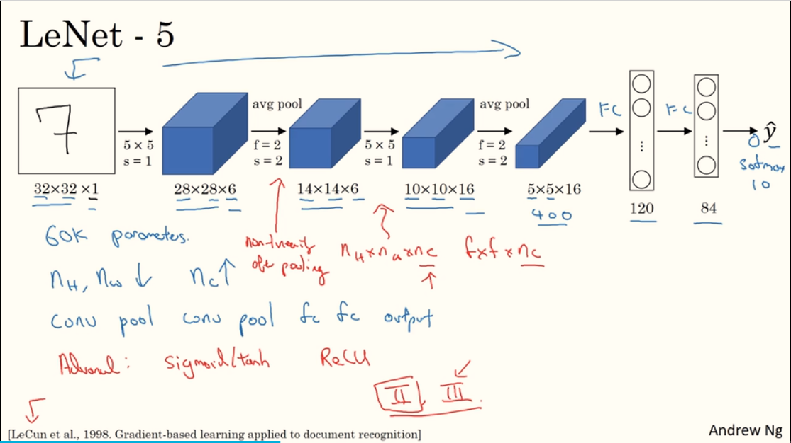
1.2. AlexNet
2012年论文：ImageNet Classification with Deep Convolutional
Neural Networks。对 227x227x3 的图像进行 1000 种分类，大致的网络结构如下图。它相比于LeNet的优点：
- 网络更大，参数更多。
- 使用
ReLu激活函数。 - 使用
Maxpooling，而不是平均pooling。 使用
Dropout防止过拟合。原理很简单：根据设定的概率，选择性地丢弃当前神经元的输出，如下图：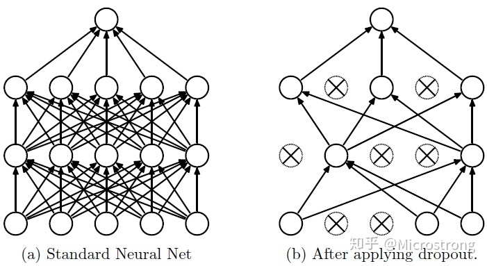
多个GPU并行计算（过时）。
- 使用局部响应归一层 LRN （没啥用？已过时）。
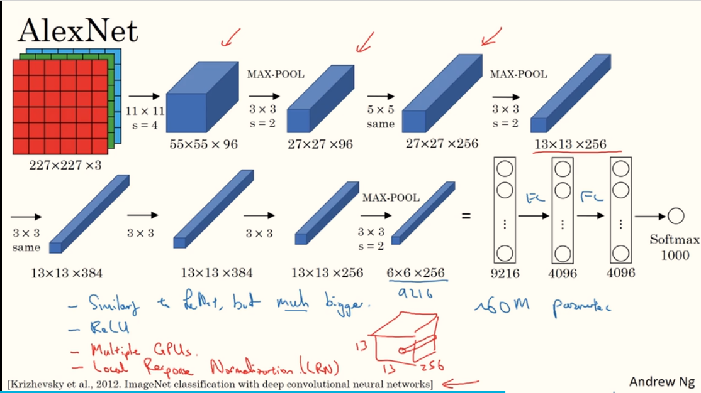
AlexNet的5层卷积层如下（224x224加2padding结果 约等于 227x227加0padding结果，论文的描述问题，不关键）：
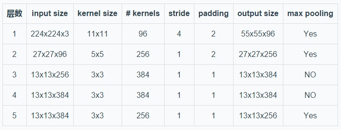
1.3. VGG - 16
2015年论文：VERY DEEP CONVOLUTIONA NETWORKS FOR
LARGE-SCALE IMAGE RECOGNITION。
16代表有16层网络，其主要改进之处在于：经过多个卷积层后，再进行池化操作。基本结构如下图，[CONV 64] x2 表示：经过2个有64个filter的卷积层，卷积的规则如图上方所示。
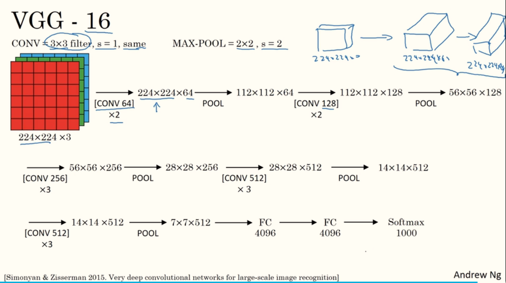
2. 语义分割
2.1. FCN
参考：
2014年论文：Fully Convolutional Networks for Semantic Segmentation，是将深度学习用于图像语义分割的开山之作。
在VGG、AlexNet等CNN网络的基础上，用卷积层代替全连接层，并使用转置卷积进行向上采样，使得网络的输出不再是类别，而是 heat map，即 end-to-end 的网络。
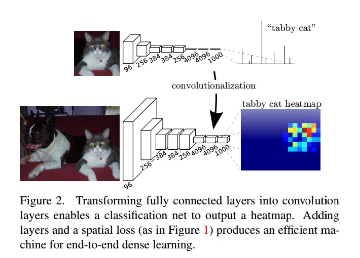
2.1.1. 转置卷积
参考：
一种向上采样的方法。其原理：对于卷积操作 $y = Cx$，$x$ 是输入图像（一维），$y$ 是输出图像（一维），$C$ 是参数（权值）矩阵；那么转置卷积操作则是 $x = C^T y$。
举例，4x4的输入，滤波器filter为3x3，没有Padding / Stride，卷积操作后输出为2x2。
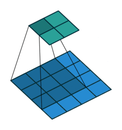
那么，$C$ 如下所示（$w_{i,j}$ 表示filter种第i行第j列的权值）：
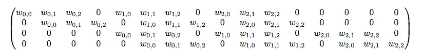
转置卷积操作 $x = C^T y$ 则如下所示（建议在纸上写出 $C^T$，就明白了）：

转置卷积的使用：
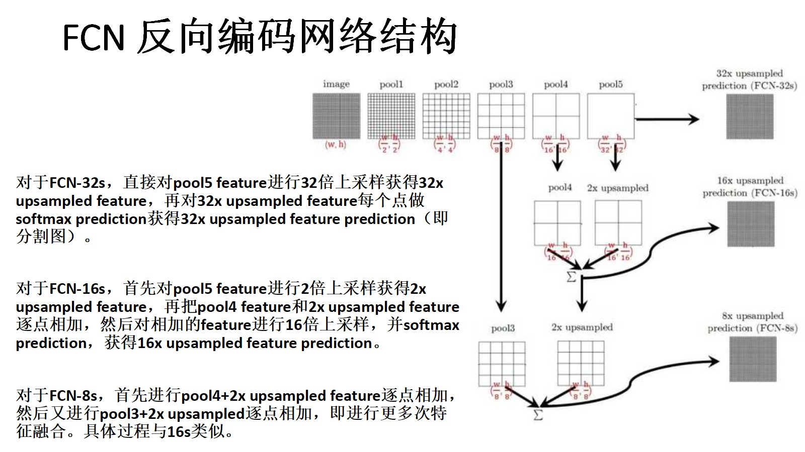
2.1.2. 性能指标
参考：语义分割评估指标mIOU
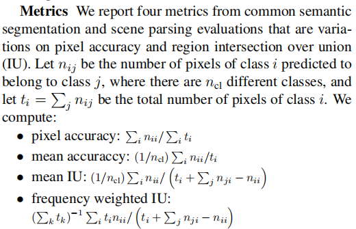
其中，mean IU(Mean Intersection over Union, MIoU) 均交并比，是语义分割最常用的标准度量。其公式如下：
$\frac{1}{n_{cl}} \displaystyle\sum_{i=0}^{n_{cl}} \frac{n_{ii}}{\displaystyle\sum_{j=0}^{n_{cl}} n_{ij} + \displaystyle\sum_{j=0}^{n_{cl}} n_{ji} - n_{ii}}$
- $n_{cl}$：像素点的数量。
- $n_{ii}$：真实值是i，预测值也是i。
- $n_{ij}$：真实值是i，预测值是j。
- $n_{ji}$：真实值是j，预测值是i。
如下图，MIoU 为两圆交集与两圆并集之间的比例，理想情况下两圆重合，比例为1。
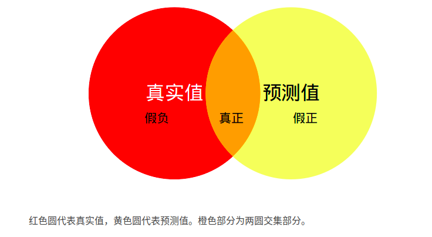
一个例子如下：
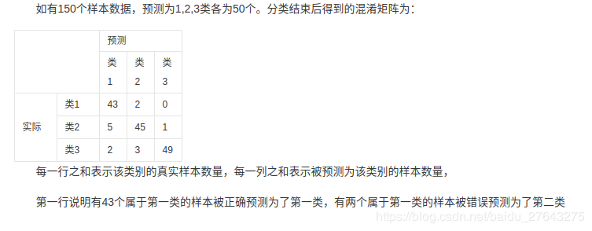
2.1.3. 转置卷积（解码）后的输出
FCN 语义分割最后是对像素进行分类, 有多少类最后的输出图像就有多少个通道, 每个通道的像素值代表了这个通道的像素应划分到哪一个类别的概率, 如果某一个像素位置在第 3 通道的值最大, 那这个位置的像素就属于第 3 个分类。